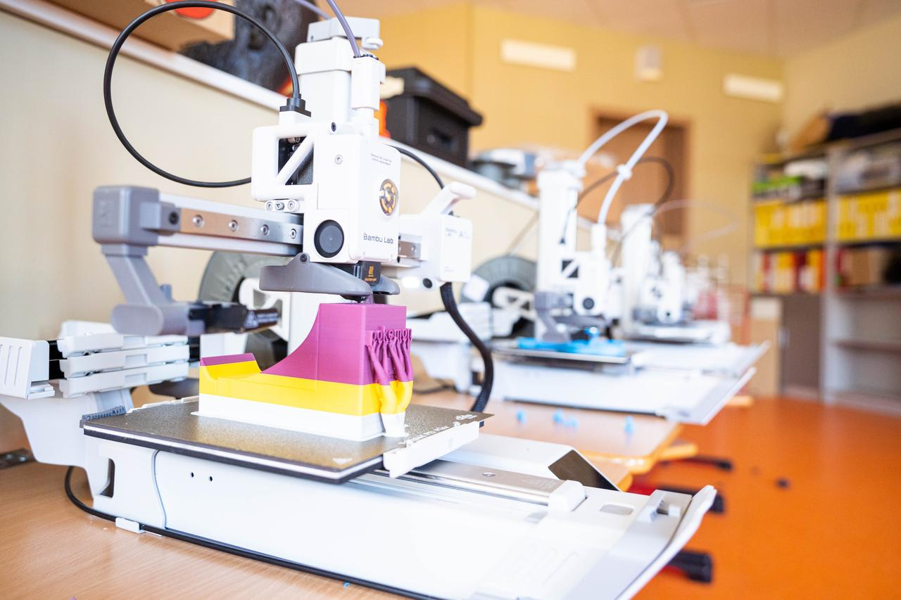

www.tehnologijuakademija.lv/stemnorises


Norises apraksts
Īstenošanas forma: Praktikums. Izmantotās metodes: Iekārtu kinemātikas izpēte, CAD 3D modelēšana, G-koda sagatavošana, prototipu testēšana, parametru analīze, diskusija un refleksija. Ievads (15 min): Iepazīstināšana ar nodarbības mērķi, darba gaitu un drošību. Skolēni klātienē iepazīst trīs atšķirīgas 3D printeru uzbūves (Cartesian, CoreXY, Delta), to kinemātiku, kustību asis un pielietojumu rūpniecībā. Ar iekārtu testa paraugiem tiek demonstrēti dažādu printeru darbības principi un ātrumi. Norises gaita (50 min): Katrs skolēns pie datora Onshape vidē projektē inženiertehnisku "Print-in-place" kustīgu mehānismu, apgūstot funkcionālo mezglu pielaides, kas nodrošina kustību uzreiz pēc izdrukas. Skolēni apgūst slicing programmatūru (slāņu biezuma, ātruma un balsta struktūru konfigurēšanu G-kodā). Paralēli dalībnieki vēro ātrgaitas 3D printeru darbību un testē parametrus: aizpildījuma (infill) struktūru un sienu skaitu, analizējot to ietekmi uz detaļas izturību. Laikietilpīgākie modeļi tiek izdrukāti pēc nodarbības un nosūtīti skolai ar pakomātu. Noslēgums (15 min): Skolēni salīdzina digitālo 3D projektu ar gatavo produktu. Diskusijā dalībnieki analizē 3D drukas pielietojumu inženierijā, prototipu pārbaudē un ražošanā, kā arī ar refleksiju izvērtē inženiera lomu. Noslēgumā viktorīna par dažādām CNC tipa iekārtām ar iespēju iegūt balviņas. Izgatavotie darbi paliek skolēnu īpašumā.
Norises sasniedzamais rezultāts
Norise atbilst: Dizains un tehnoloģijas. Temats: Nodarbības paredzētas 7., 8., 9. klašu grupām. Temats: Kā plānot un izgatavot inženiertehnisku risinājumu? Sasniedzamie rezultāti: T.9.1.3.1. Patstāvīgi vai sadarbībā ar citiem plāno un apraksta dizaina risinājuma izstrādes procesu. Salīdzina dažādu materiālu un tehniku iespējas un ietekmi uz vidi. Izvēlas un pamato piemērotāko risinājumu. Veido un atbilstoši noformē risinājuma dokumentāciju – rasējumus, tehniskos zīmējumus, 3D modeļus un vizualizācijas.